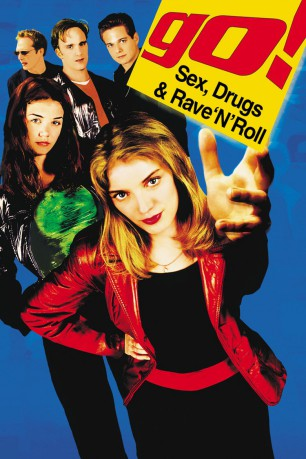

#5087 Go! Das Leben beginnt erst um 3.00 Uhr morgens
Alternativ: Go
 
 IMDB-Wertung: 7.3 / 10
IMDB-Wertung: 7.3 / 10  Metascore: 0
Metascore: 0 
Ronna arbeitet in einem Supermarkt, genervt von den täglichen Schikanen der lieben Kundschaft. Sie ist pleite und verzweifelt. Nur ein Ecstasy-Deal mit dem durchgeknallten Simon kann Ronna aus der Misere helfen … und Simon findet sich hyperschnell mit drei Freunden auf einem Mörder-Trip nach Las Vegas. Mitten auf dem Casino-Strip schlägt die Stunde der Wahrheit. Ein kurzer Besuch in einer Lapdance-Bar – und die Killer sind hinter ihnen her. In rasender Flucht geht es zurück nach L.A. – direkt in eine Undercover-Drogen-Operation, in die auch zwei TV-Stars verwickelt sind. Der erste Tote kündigt an, daß die Hölle über den Jungs einbrechen wird.
Jahr: 1999
Dauer: 101 Minuten
FSK: 16
Land: USA Studio: Columbia PicturesTonspuren: DD5.1 - ,
Untertitel:
Auflösung: 1080p (1920x800) Größe: 7700 MB
Genre: Komödie, Krimi
Regisseur:  Doug Liman
Doug Liman
Drehbuch: Paul Zbyszewski
Soundtrack:
Darsteller:
 Katie Holmes als Claire Montgomery
Katie Holmes als Claire Montgomery Sarah Polley als Ronna Martin
Sarah Polley als Ronna Martin- Suzanne Krull als Stringy Haired Woman
- Desmond Askew als Simon Baines
 Robert Peters als Switterman
Robert Peters als Switterman- Scott Wolf als Adam
 Jay Mohr als Zack
Jay Mohr als Zack Timothy Olyphant als Todd Gaines
Timothy Olyphant als Todd Gaines- Jodi Bianca Wise als Ballerina Girl
 William Fichtner als Burke
William Fichtner als Burke- Tony Denman als Track Suit Guy
- Natasha Melnick als Anorexic Girl
 Manu Intiraymi als Skate Punk Guy
Manu Intiraymi als Skate Punk Guy Taye Diggs als Marcus
Taye Diggs als Marcus Breckin Meyer als Tiny
Breckin Meyer als Tiny James Duval als Singh
James Duval als Singh Courtland Mead als Boy
Courtland Mead als Boy Katharine Towne als Becky
Katharine Towne als Becky Tane McClure als Holly
Tane McClure als Holly Jimmy Shubert als Victor Jr.
Jimmy Shubert als Victor Jr. J.E. Freeman als Victor Sr.
J.E. Freeman als Victor Sr.- Jay Paulson als Loop
 Jane Krakowski als Irene
Jane Krakowski als Irene Melissa McCarthy als Sandra
Melissa McCarthy als Sandra- Emmy Collins als Longhair in Supermarket , uncredited
- Sean Everett als Shooting Bartender , uncredited
 Telly Savalas als Himself, in gambling video , archive footage, uncredited
Telly Savalas als Himself, in gambling video , archive footage, uncredited Dana Schick als Girl in Line , uncredited
Dana Schick als Girl in Line , uncredited- Mark Sharp als Police Officer , uncredited
- J. Karen Thomas als Nurse , uncredited
- Nathan Bexton als Mannie
- Rita Bland als Dancing Register Woman
- Scott Hass als Raver Dude
- Josh Paddock als Spider Marine
- Marisa Johnston als Rebecca
- Ken Kupstis als Sports Car Man
- Nikki Fritz als Noelle
- Shann Christen als Jimmy
- Willie Amakye als Waiter
- Princess Leah Lucky Buttons als Alley Cat
- Chris Biorn als Simon Baines / Desmond Askew , uncredited
- Walter Ludwig als Strip Club Patron , uncredited
- Bob Pepper als BlackJack & Slot Player , uncredited
- Bill Swann als Elevator Man , uncredited
Datei: X:\1999\Go! Das Leben beginnt erst um 3.00 Uhr morgens (1999, FSK16, 1920x800).mkv seit 23.12.2016
Festplatte: HD 1996-2002
 Es gibt insgesamt 81 Filme in der Gruppe '1999'
Es gibt insgesamt 81 Filme in der Gruppe '1999'